Define the application Reference Documentation
The first questions John has to answer are :
What the application is supposed to be?
and
What the application is supposed to do?
What the application is supposed to be ?
First, John tries to get a feel for the bigger picture of its application. The purpose is to get an overall understanding of the system. He wants to catch the business process and checks if there is a precedent for this application.
To do so UML propose a very useful diagram : the activity diagram.
The activity diagram is part of the behavioral diagrams in UML Standard, it is used to represent workflows of stepwise activities.

The activity diagram is a synchronized diagram which means that any elements existing under an activity in the UML model will be visible automatically in the activity diagram.
Manage activities
It is possible to create activity elements by selecting the creation tools from the palette and then clicking on the diagram or an element.

A diagram is associated to a package and when the user click on the diagram background the element is created under the corresponding package in the UML model. If the user selects a container, the element will be created under the corresponding semantic element in the UML model.
Tooltip tools are also available to create any kind of elements :
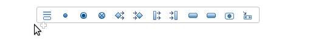
Creation tools are available in the activity diagram for the following types :
| Element | Representation | Comments |
|---|---|---|
| Partition |  |
Organizes a flow by grouping elements |
| Initial Node |  |
Start of a flow |
| Activity Final Node |  |
End of a flow |
| Flow Final Node |  |
Exit from the system |
| Decision Node |  |
Point of conditional progression |
| Merge Node |  |
Brings together a number of alternative flow paths |
| Fork Node | 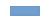 | Split the flow into concurrent flows |
| Join Node |  |
Join the flow of concurrent flows |
| Opaque Action |  |
Describes a basic process |
| Activity state | 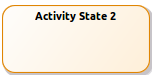 | Describes a sub activity |
| Call Operation action | 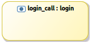 | Describes a call to a defined operation |
| Activity parameter |  |
Defines parameters for the activity |
| Data store |  |
Define permanently stored data |
| Input pin |  |
Activity input |
| Output pin | 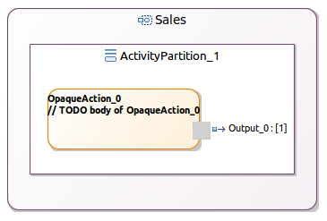 | Activity output |
When the Call Operation action tool is selected, a selection wizard is opened to ask the user to select an existing operation in the UML model :

The user can also delete an activity element (see Diagram editor/Editor tab-bar/Delete element/from model).
Manage flows
It is possible to create a flow by selecting the edge creation tool from the palette and then clicking on a source element and a target element.
The following edge creation tools exist in the palette :
| Element | Representation | Comments |
|---|---|---|
| Control flow |  |
Connect two nodes |
| Object flow |  |
Connect two ports exchanging data |
The user can also delete a flow (see Diagram editor/Editor tab-bar/Delete element/from model).
And finally, he can reconnect flows. It is possible to reconnect the source and the target of any kind of edge in the activity diagram :
- control flows
- object flows
Edit labels
In the use case diagram, it is possible to edit the elements labels (see Diagram editor/Editor main graphical area/Direct edit).
This actions allows to edit :
- actor, subject (component, artifact, datatype, interface, collaboration, class), use case labels
- relationships labels
What the application is supposed to do ?
Capture the use cases
The next step for John is to capture the different requirements. He knows what he wants, what the other stakeholders want and so he needs to document this. He has already started catching the requirements on post-it notes and pieces of paper during meetings, he has also used his whiteboard for some sketching.
When he recovered all his requirements, he starts to sort them by subject in order to see who is going to use the application. He needs now to capture the different users of the system. John creates a UML Use Case diagram to specify the different subjects and the roles played by users and other systems that interact.
The use case diagram is used to describe the interaction of the user and other applications with the specified system.

The use case diagram is an unsynchronized diagram which means that the user has to add existing elements manually on the diagram to see them.
Manage use cases
It is possible in the use case diagram to create an element by selecting the creation tool from the palette and then clicking on the diagram or an element. A diagram is associated to a package and in this case the element is created under the corresponding package in the UML model.

Tooltip tools are also available to create any kind of elements.
The available elements in the use case diagram are :
| Element | Representation | Comments |
|---|---|---|
| Actor |  |
User of the system |
| UseCase |  |
Describes how a user interacts with the system |
| Collaboration | TBD | Set of cooperating roles |
| Subject | 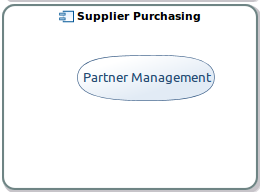 | Group logically related elements |
A subject could be a :
- Component
- Class
- Artifact
- DataType
- Interface
The user can also delete an element (see Diagram editor/Editor tab-bar/Delete element/from model).
Manage relationships
It is possible to create a relationship by selecting the edge creation tool from the palette and then clicking on a source element and a target element.
The following edge creation tools exist in the palette :
| Element | Representation | Comments |
|---|---|---|
| Association |  |
General relationship type between elements |
| Extend |  |
Indicate that an element extends the behavior of another |
| Include |  |
Indicates that the source element includes the functionality of the target element |
| Generalization | 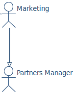 | Indicate inheritance |
The user can also delete a relationship (see Diagram editor/Editor tab-bar/Delete element/from model).
And finally, he can reconnect relationships. It is possible to reconnect the source and the target of any kind of edge in the use case diagram :
- association
- extend
- include
- generalization
Manage existing elements
As the diagram is unsynchronized, the user needs to add manually the elements already existing in the semantic model that should appear on the representation.
It is possible to add existing elements in the use case diagram by :
- selecting the add tool from the palette or the tooltip and then clicking on the diagram or an element. The add tool opens a selection wizard.
- drag and droping an element from the model explorer.
The following elements can be added on a component diagram :
| Element | Representation |
|---|---|
| Use case | |
| Use case into a subject | |
| Subject (component, artifact, datatype, interface, collaboration, class) | |
| Actor | |
| Package | Add all the elements which could be visible on the diagram |
The user can see that an element is not coming from the current package :
- the element border is lighter than the element border of elements defined in the current package
- a tooltip shows the container package of the element if the element is not contained by the current package
And finally, he can remove an existing element from a diagram. In this case the element is only deleted from the representation but it is not removed from the UML model. This Remove tool exists in the Existing elements section in the palette (see Diagram editor/Editor tab-bar/Delete element/from model).
Add related elements
In the use case diagram a contextual action is available to show on the diagram the element related to the selection.
The Add related elements action is available from :
- a subject, a use case, an actor : shows all the elements that define a relationship (dependency, include, association…) with the selected element
- a use case diagram : shows all the elements contained in the package associated to the diagram.
Edit labels
In the use case diagram, it is possible to edit the elements labels (see Diagram editor/Editor tab-bar/Delete element/from model). This actions allows to edit :
- actor, collaboration, subject, use case labels
- relationships labels
Define the package system structure
At this step, John knows who will use its application and what they are able todo with it. It is time to define the components, the interfaces and the relationships that would be seen and experienced by the application user. The purpose is to detail the available objects in the user’s universe and how they can use them to accomplish certain tasks.
John defines the big structure of the system thanks to the Package diagram.
The package diagram is used to describe the structure of the system by showing the packages and their dependencies.

The package diagram is an unsynchronized diagram which means that the user has to add existing elements manually on the diagram to see them.
The package diagram is used to describe the structure of the system by showing the packages and their dependencies.
Manage packages

It is possible to create activities elements by selecting the creation tools from the palette and then clicking on the diagram or an element. A diagram is associated to a package and when the user click on the diagram background the element is created under the corresponding package in the UML model. If the user selects a container, the element will be created under the corresponding semantic element in the UML model.
A creation tool is available in the package diagram for the package : 
The user can also delete an element (see Diagram editor/Editor tab-bar/Delete element/from model).
Manage relationships
It is possible to create a relationship by selecting the edge creation tool from the palette and then clicking on a source element and a target element.

The following edge creation tools exist in the palette :
| Element | Representation | Comments |
|---|---|---|
| Contained in |  |
Defines that a package that is made up of smaller packages |
| Import |  |
Show that the package content is imported |
| Usage |  |
Shows that a package uses another package |
| Dependency | 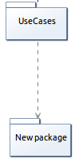 | Traces a dependency between packages |
| Merge | 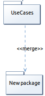 | The contents of the target package are merged with those of the source package |
The user can also delete a relationship (see Diagram editor/Editor tab-bar/Delete element/from model).
And finally, he can reconnect relationships. It is possible to reconnect the source and the target of any kind of edge in the use case diagram :
- contained in
- dependency
- usage
- import
- merge
Manage existing elements
As the diagram is unsynchronized, the user needs to add manually the elements already existing in the semantic model that should appear on the representation.
It is possible to add existing elements by :
- selecting the add tool from the palette and then clicking on the diagram or an element : 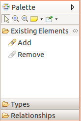
- drag and droping a package from the model explorer :

The user can see that an element is not coming from the current package :
- the element border is lighter than the element border of elements defined in the current package
- a tooltip shows the container package of the element if the element is not contained by the current package
And finally, he can remove an existing element from a diagram. In this case the element is only deleted from the representation but it is not removed from the UML model. This Remove tool exists in the Existing elements section in the palette (see Diagram editor/Editor tab-bar/Delete element/from model).
Add related elements
In the package diagram a contextual action is available to show on the diagram the element related to the selection.

The add related elements action is available from :
- a package : shows all the packages that define a relationship (containment, dependency, usage..) with the selected package
- a package diagram : shows all the elements contained in the package associated to the diagram.
Edit labels
In the package diagram, it is possible to edit the elements labels (see Diagram editor/Editor tab-bar/Delete element/from model). This actions allows to edit :
- package labels
- relationships labels
Define the components
It is the moment for John to split the system in multiple components and to describe how all these elements are linked together in a component diagram.
The component diagram is used to describe the structure of the system by showing the components and their connectors.

The component diagram is an unsynchronized diagram which means that the user has to add existing elements manually on the diagram to see them.
Manage nodes
It is possible to create nodes by selecting the creation tools from the palette and then clicking on the diagram or an element. A diagram is associated to a package and when the user click on the diagram background the element is created under the corresponding package in the UML model.
If the user selects a container, the element will be created under the corresponding semantic element in the UML model.

Tooltip tools are also available to create any kind of elements.
Creation tools are available in the component diagram for the following types :
| Element | Representation | Comments |
|---|---|---|
| Component |  |
A modular part of a system |
| Component into a component |  |
A sub part of a component |
| Class |  |
A representation of objects |
| Class into a component |  |
A representation of objects |
| Port on a component |  |
Define the interaction between a component and its environment |
| Port on a class |  |
Define the interaction between a class and its environment |
| Interface | 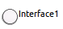 | A contract that implementers agree to meet |
The user can also delete an element (see Diagram editor/Editor tab-bar/Delete element/from model.
}
Manage relationships
It is possible to create a relationship by selecting the edge creation tool from the palette and then clicking on a source element and a target element.
The following edge creation tools exist in the palette :
| Element | Representation | Comments |
|---|---|---|
| Usage | 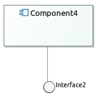 | Source component uses target component |
| Dependency |  |
Source component depends on target component |
| Component Realization |  |
Source component realizes target component |
| Generalization |  |
Source component generalizes target component |
| Interface Realization |  |
Component realizes interface |
| Redefined |  |
Source port redefined target port |
| Connector | Represented by a solid link between two ports | Source port is connected to target port |
The user can also delete a relationship (see Diagram editor/Editor tab-bar/Delete element/from model).
And finally, he can reconnect relationships. It is possible to reconnect the source and the target of any kind of edge in the use case diagram :
- usage
- dependency
- component realization
- interface realization
- redefined
- connector
Manage existing elements
As the diagram is unsynchronized, the user needs to add manually the elements already existing in the semantic model that should appear on the representation.
It is possible to add existing elements by :
- selecting the add tool from the palette or the tooltip and then clicking on the diagram or an element. The add tool opens a selection wizard.
- drag and droping an element from the model explorer.
The following elements can be added on a component diagram :
- component
- component into an existing component
- class
- class into an existing component
- interface
- package
The user can see that an element is not coming from the current package :
- the element border is lighter than the element border of elements defined in the current package
- a tooltip shows the container package of the element if the element is not contained by the current package
And finally, he can remove an existing element from a diagram. In this case the element is only deleted from the representation but it is not removed from the UML model. This Remove tool exists in the Existing elements section in the palette (see Diagram editor/Editor tab-bar/Delete element/from model).
Add related elements
In the component diagram a contextual action is available to show on the diagram the element related to the selection.
The add related elements action is available from :
- a component , a class, an interface, a port : shows all the elements that define a relationship (dependency, component realization, interface realization…) with the selected element
- a component diagram : shows all the elements contained in the package associated to the diagram.
Edit labels
In the package diagram, it is possible to edit the elements labels (see Diagram editor/Editor main graphical area/Direct edit).
This actions allows to edit :
- component, class, interface, port labels
- relationships labels
Define the information flow
By creating links between the components, John defines the flow followed by the data in the system.
To get details on how to manage the information flows,
@see “What the application is supposed to be ?” Define components → Manage relationships.
Diagram the organization of the information
He provides a detailed organization of the information by creating a new kind of activity diagram. This diagram shows how the information goes through the different components of the system. Previously in the process, John used an activity diagram to describe the global business process of the specified application, here the activity diagram is used again but for providing low level information.
To get details on activity diagram,What the application is supposed to be ?.
Define the system interfaces
Then for each component, John details the internal structure of a component thanks to Composite structure diagrams.
The composite structure diagram is used to describe the structure of the system by showing the internal structure of classes and the interfaces they used to collaborate.

The component diagram is an unsynchronized diagram which means that the user has to add existing elements manually on the diagram to see them.
Manage nodes
It is possible to create a type by selecting the type creation tool from the palette and then clicking on the diagram or an element.
A diagram is associated to a package and when the user click on the diagram background the element is created under the corresponding package in the UML model.
If the user selects a container, the element will be created under the corresponding semantic element in the UML model.

Tooltip tools are also available to create any kind of elements.
Creation tools are available in the composite structure diagram for the following types :
| Element | Representation | Comments |
|---|---|---|
| Component | |
A modular part of a system |
| Component into a component | |
A sub part of a component |
| Class | |
A representation of objects |
| Class into a component | |
A representation of objects |
| Part |  |
Runtime instances of classes or interfaces |
| Property |  |
Reference a property |
| Port on a component | |
Interaction between a component and its environment |
| Port on a class | |
Interaction between a class and its environment |
The user can also delete an element (see Diagram editor/Editor tab-bar/Delete element/from model).
Manage edges
It is possible to create a relationship by selecting the edge creation tool from the palette and then clicking on a source element and a target element.
The following edge creation tools exist in the palette :
| Element | Representation | Comments |
|---|---|---|
| Connector |  |
Illustrate communication links between elements |
| Usage | Element uses another element | |
| Generalization | |
Indicates inheritance |
| Redefined | |
Indicates that a port redefined another port |
The user can also delete an activity element (see Diagram editor/Editor tab-bar/Delete element/from model).
And finally, he can reconnect relationships. It is possible to reconnect the source and the target of any kind of edge in the use case diagram :
- usage
- dependency
- component realization
- interface realization
- redefined
- connector
Manage existing elements
As the diagram is unsynchronized, the user needs to add manually the elements already existing in the semantic model that should appear on the representation.
It is possible to add existing elements by :
- selecting the add tool from the palette or the tooltip and then clicking on the diagram or an element. The add tool opens a selection wizard.
- drag and droping an element from the model explorer.
The following elements can be added on a component diagram :
- component : the component and all its parts, properties and sub components will be visible
- component into an existing component : the component and all its parts, properties and sub components will be visible
- class : the class and all its ports will be visible
- class into an existing component : the class and all its ports will be visible
- part
- property
- required service : when the Required Service tool is selected from the palette, a selection wizard asks the user to select the required interfaces.

The required services are represented as following:

- provided service : when the Provided Service tool is selected from the palette, a selection wizard asks the user to select the required interfaces.

The provided services are represented as following:
- package : the package will not be visible on the diagram but all the sub elements will be added
The user can see that an element is not coming from the current package :
- the element border is lighter than the element border of elements defined in the current package
- a tooltip shows the container package of the element if the element is not contained by the current package
And finally, he can remove an existing element from a diagram. In this case the element is only deleted from the representation but it is not removed from the UML model. This Remove tool exists in the Existing elements section in the palette (see Diagram editor/Editor tab-bar/Delete element/from model).
Add related elements
In the composite structure diagram a contextual action is available to show on the diagram the element related to the selection.
The add related elements action is available from :
- a component , a class, an interface, a port : shows all the elements that define a relationship (dependency, component realization, interface realization…) with the selected element
- a composite structure diagram : shows all the elements contained in the package associated to the diagram.
Edit labels
In the composite structure diagram, it is possible to edit the elements labels (see Diagram editor/Editor main graphical area/Direct edit). This actions allows to edit :
- component, class, interface, port labels
- relationships labels
Define the system environment
Then, John defines the system environment thanks to a Deployment diagram, and how the software is deployed on the infrastructure. This diagram describes the current technological limitations and constraints.
The deployment diagram is used to describe the structure of the system by showing the physical deployment of artifacts on nodes.

The deployment diagram is an unsynchronized diagram which means that the user has to add existing elements manually on the diagram to see them.
Manage nodes
It is possible to create a type by selecting the type creation tool from the palette and then clicking on the diagram or an element.
A diagram is associated to a package and when the user click on the diagram background the element is created under the corresponding package in the UML model.
If the user selects a container, the element will be created under the corresponding semantic element in the UML model.
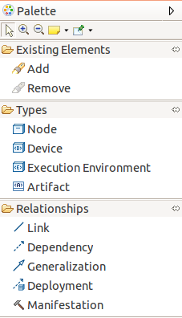
Tooltip tools are also available to create any kind of elements.
Creation tools are available in the deployment diagram for the following types :
| Element | Representation | Comments |
|---|---|---|
| Node | 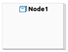 | Physical element on whic the system is deployed |
| Device | 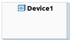 | Physical electronic resource with processing capability |
| Execution environment |  |
Specific node where artifacts are deployed |
| Artifact |  |
Physical piece of information used or produced by a system |
The user can also delete an activity element (see Diagram editor/Editor tab-bar/Delete element/from model).
Manage relationships
It is possible to create a relationship by selecting the edge creation tool from the palette and then clicking on a source element and a target element.
The following edge creation tools exist in the palette :
| Element | Representation | Comments |
|---|---|---|
| Link | 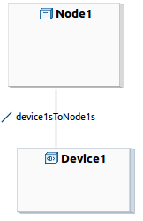 | General relationship |
| Dependency |  |
Dependency between elements |
| Generalization |  |
Indicates inheritance |
| Deployment | 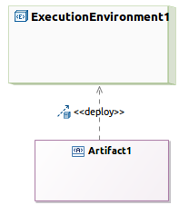 | Indicates the deployment of an artifact on a node |
| Manifestation |  |
An artifact embodies or manifests a number of model elements |
The user can also delete a flow (see Diagram editor/Editor tab-bar/Delete element/from model).
And finally, he can reconnect flows. It is possible to reconnect the source and the target of any kind of edge in the activity diagram :
- link
- dependency
- generalization
- deployment
- manifestation
Manage existing elements
As the diagram is unsynchronized, the user needs to add manually the elements already existing in the semantic model that should appear on the representation.
It is possible to add existing elements by :
- selecting the add tool from the palette or the tooltip and then clicking on the diagram or an element. The add tool opens a selection wizard.
- drag and droping an element from the model explorer.
The following elements can be added on a component diagram :
- node
- node into a node
- device
- device into a node
- execution environment
- execution environment into a node
- artifact
- artifact into a node
- component
- package
The user can see that an element is not coming from the current package :
- the element border is lighter than the element border of elements defined in the current package
- a tooltip shows the container package of the element if the element is not contained by the current package
And finally, he can remove an existing element from a diagram. In this case the element is only deleted from the representation but it is not removed from the UML model. This Remove tool exists in the Existing elements section in the palette (see Diagram editor/Editor tab-bar/Delete element/from model).
Add related elements
In the deployment diagram a contextual action is available to show on the diagram the element related to the selection.
The add related elements action is available from :
- a component , a node, a device, an execution environment, an artifact : shows all the elements that define a relationship (dependency, deployment, manifestation…) with the selected element
- a deployment diagram : shows all the elements contained in the package associated to the diagram.
Edit labels
In the package diagram, it is possible to edit the elements labels (
see Diagram editor/Editor main graphical area/Direct edit). This actions allows to edit :
- component, node, device, execution environment, artifact labels
- relationships labels
Extend UML standard
Define extensions
Sometimes, the UML standard does not provide all the concepts expected by John. Thanks to the Profile diagram, it is possible to extend the standard to add new concepts or to adapt existing ones.
The profile diagram operates at the metamodel level to provide new stereotypes and profiles.

To create a new profile, the user creates a new UML model and selects as root element a Profile element.
Then on the newly created UML model, it is possible to create a new Profile diagram.
The main feature is to create and delete stereotypes in the profile diagram.
A stereotype can be created by selecting the stereotype creation tool from the palette and then clicking on the diagram. A diagram is associated to a package and in this case the element is created under the corresponding package in the UML model. Tooltip tools are also available to create any kind of elements.
The palette defines the following tools :
- Stereotype : Create a new stereotype. The user selects the tool in the palette or the tooltip and selects the diagram background. A new stereotype looks like a UML class and contains in its label the keyword stereotype. By default a stereotype does not extend any metaclass. But when the user validates the UML profile, a warning is thrown when a stereotype does not extend, directly or indirectly, a metaclass.
- MetaClass : Reference an existing metaclass. This tool opens a wizard which lists the UML metaclasses not already referenced in this profile. This wizard provides filters in order to show only the concretes classes or a sub part of the metamodel.
- Attribute : Add a new property in a stereotype. After stereotype application, this property will be available in the property box.
- Extension : Create an extension between a stereotype and a metaclass or create a generalization between to stereotypes, depending on the clicked elements. This tool also creates the base XXXX attributes which must not be visible on the diagram.
- Association : Create an association between two stereotypes or a stereotype and a referenced metaclass. In the UML model, this tool creates a property in the stereotype and a navigable association to the target. This tool opens a wizard which also allows create a new association at UML level. This tool can also propose an existing directed relationship from UML, between these elements. If the user selects it, it will import the directed relationship into the profile and create a new stereotype extending it. The tool will display the association between source and target element, and link this new stereotype to it.
- Enumeration : Create an enumeration within the profile. The user can also create enumeration literal in it afterwards.
- Define : Generate complementary information within the profile in order to apply it dynamically in the current workspace. It mainly contains the UML annotation.
- Undefine : Delete from the profile complementary information generated by the define command.
- Export : Create or update an eclipse plugin in order to deploy the edited profile in an Eclipse installation. This plugin must contain the profile, all its generated code and populate extensions to register itself to the platform.
Manage profiles and stereotypes
In UML Designer, a Profile layer is available on all the diagrams. To describe his application John opens the existing diagrams and activates the profile layer.
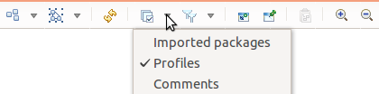
This layer provides a new section in the palette.

The following tools are available :
- apply a profile : the user selects the Apply profile tool in the palette and clicks on the diagram, a wizards opens which shows the applicable and already applied profiles.

- apply stereotype : the user selects the Apply stereotype tool in the palette and selects an element in the diagram, a wizards opens which shows the applicable and already applied stereotypes according to the activated profiles. When a stereotype is applied on an element, a keyword representing the name of the stereotype is added before the label of the element :

If the profile defines some properties on the stereotypes, these properties are available in the property box, after canonical properties of the element. Here is a sample with a Stereotype adding a “tagged value” on a package: